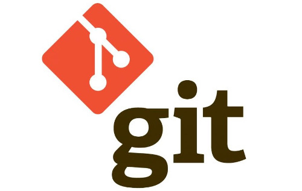

Tema: GIT y GITHUB
Objetivo general:
Diseñar el OVA Objeto Virtual de Aprendizaje para el curso diseño de sitios web basados en la temática de GIT y GITGUB
Objetivos especificos:
1. Conocer el origen de Git y GitHub.
2. Conocer la forma para poder crear repositorios a través de la cuenta de GitHub o por medio de GitHub Desktop
3. Conocer la forma en la que podemos clonar un repositorio creado en la cuenta de GitHub con el GitHub Desktop
Materiales:
Imagenes:

GitHub: https://miro.medium.com/max/1125/1*wotzQboYWAfaj-7bvGNIkQ.png

Git: https://ubacode.files.wordpress.com/2016/02/gitlogo.jpg?w=500
Texto:
Git es un sistema de control de versiones distribuido; esto quiere decir que mantiene una copia local del repositorio completo
GitHub es un sitio web y un servicio en la nube que ayuda a los desarrolladores a almacenar y administrar su código, al igual que llevar un registro y control de cualquier cambio sobre este código
Contenido:
Maquetación::